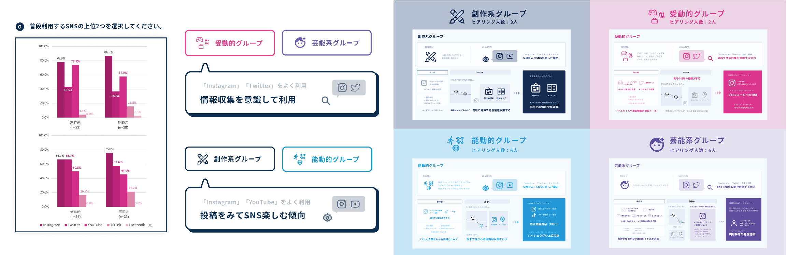

Research
感性インタラクションデザイン
研究室
梁 元碩 教授
明るく、楽しく、元気に、そして「前向きに」
人間が製品、サービス、システムを使用する場合、良い経験をできるように、物理的、感性的観点で眺めて、ユーザと製品間の相互作用（インタラクション）に関して理解が必要です。それに基づいて最適なインタラクションの設計を行い、プロトタイプおよび使用性評価によって使いやすくて便利で魅力的な感性インタラクションをデザインする方法について研究しています。
-

グローバル展開サービスにおける情報提示の一貫性について
渡邊 亜未 -
Eコマースでの3Dコンフィギュレータの有用性
- カーソル操作におけるにおけるユーザビリティ向上 -
古橋 優吾 -

UIの情報提示の違いがユーザーの心理に及ぼす影響
- セルフオーダーのスキャナビリティを中心に -
松本 幹大 -

若者のアルバイト早期離職に対する心理的サポートについて
佐分 わか奈 -
待ち時間の認知における情報提示の有用性について
- スプラッシュスクリーン活用の試み -
大森 すみれ -

UIエレメントにおけるかわいい感性の活用について
谷尾 美亜 -
情報表現がユーザーの認知及び負荷に与える影響
- サムネイルのUI的特徴を中心に -
上嶋 優輝 -
オノマトペを用いた情報提示による質感認知への影響
海野 恵 -

地域観光の情報発信におけるタッチポイントの検討
- 若者のSNS利用特徴の調査を中心に -
益子 美菜実 -

オンライン決済における心理的な不安感解消に関する研究
- インタラクションの待ち時間について -
全 玲奈 -
擬態語を用いた質感印象への影響度
- 質感・感情オノマトペの提示による印象への作用の違い -
秋葉 美怜 -

創造力を育む体験型学習におけるバイアス解消の試み
安西 竜晟
-
渡邊 亜未
グローバル展開サービスにおける情報提示の一貫性について
ICTの発展により、海外ECサイトを利用する機会は増えているが、利用率は低いことがわかっている。そこで、サービスのグロバール化におけるユーザーのメンタルモデルの違いによる問題に着目した。認知しやすいUI要素の観点から、予約サイトの画面遷移における視覚情報の一貫性を保つことでペインポイントが軽減できることを確かめる。
-
古橋 優吾
Eコマースでの3Dコンフィギュレータの有用性
カーソル操作におけるにおけるユーザビリティ向上
自動車メーカーではオンライン中心の販売戦略が加速されており、ARや3Dコンフィギュレータを活用して消費者の都合に合わせて情報を多角的に認知できるようにしている。しかしメーカーごとに情報掲示が異なるため能動的情報に慣れていない人が使いこなせていない。従って本研究ではカーソル操作からユーザビリティ向上について考えた。
あなたにとってデザインとは?「モノ」や「コト」を通してユーザーに最高の体験を提供すること
-
松本 幹大
UIの情報提示の違いがユーザーの心理に及ぼす影響
セルフオーダーのスキャナビリティを中心に
近年セルフオーダーと呼ばれる端末が急増している。しかし、セルフオーダーには「操作中、後ろに並んでいる人を気にして焦りやすい」という問題がある。本研究はセルフオーダーのUIの情報提示を変えることで、そのような心理的な負担を軽減できるかどうかを研究した。
あなたにとってデザインとは?理想の追求
-
佐分 わか奈
若者のアルバイト早期離職に対する心理的サポートについて
近年、少子高齢化に伴い、労働に従事する人口不足が深刻化している。また労働者側も働くことに対する様々な変化が見られる。若者のアルバイトにおいて、人材サービスとのタッチポイントを踏まえた上で早期離職という問題について考える。それに伴って必要とされる心理的サポートを先行研究や実際に行われている事例を元に提案した。
あなたにとってデザインとは?白に他の色を混ぜること
-
大森 すみれ
待ち時間の認知における情報提示の有用性について
- スプラッシュスクリーン活用の試み -
アプリを立ち上げたときに表示されるスプラッシュスクリーン画面は、サービスの第一印象の形成に大きな影響を与える。ユーザーが目的をもってアプリを起動した際に、適切な表示がされないことでUXを損なってしまう恐れがある。そのため、本研究では海外の事例とも照らし合わせながらマイクロモーメントにおける有効的な情報提示を検討した。
あなたにとってデザインとは?最高な出会いをもたらしてくれて楽しい日々を過ごすことができる素晴らしいコミュニケーションこれぞまさにOHMYGOD
-
谷尾 美亜
UIエレメントにおけるかわいい感性の活用について
「かわいい」は現在注目されている感性であり、人々のポジティブな行動や気持ちを生み出す力があるということがわかっている。「かわいい」はプロダクトやサービスの機能価値の同質化が進んだ現代において重要となるUXの向上に結びつく。本研究では、「かわいい」とUIエレメントとの関係について調査を行い、ガイドラインを作成した。
あなたにとってデザインとは?プリキュアの存在が私たちに勇気や元気を与えるように、デザインはユーザーの生活にポジティブやハッピーを与える手段のひとつ
-
上嶋 優輝
情報表現がユーザーの認知及び負荷に与える影響
サムネイルのUI的特徴を中心に
本研究ではICTの発展に伴い市場の拡大が続いている情報提供サービス、中でも膨大な数の映像コンテンツを配信することや、市場内の類似サービスとの差別化を図ることを背景に、既存のコンテンツサービスとは異なる独自の情報表現を施したOTTサービスのUIに焦点を当て、情報表現の違いがユーザーの認知及び負荷へ与える影響を提示した。
あなたにとってデザインとは?ユーザーの問題を客観的に解決するための道具と技術 。
-
海野 恵
オノマトペを用いた情報提示による質感認知への影響
昨今、画面上の情報だけに頼ったECサイトでのショッピングが当たり前になったことから、購入したモノが「イメージしていた質感と違った」という理由で失敗したと感じる人が増ええいる。そこで、オノマトペと、アイコン・モーショングラフィックなどの視覚情報を組み合わせた、新たな質感の情報提示方法を検討を行った。
あなたにとってデザインとは?気がついたらやってるもの。
-
益子 美菜実
地域観光の情報発信におけるタッチポイントの検討
若者のSNS利用特徴の調査を中心に
SNSにより若者の情報収集方法は複雑化し、趣味嗜好は多様化している。旅行においてはビジュアル検索に加えて、欲しい情報に応じてWeb検索も利用する。しかし地方自治体は資金・人員不足から若者の情報収集の特徴を掴めずにいる。そのため若者のSNS利用特徴と旅行におけるヒアリング調査から、地域観光における情報発信のタッチポイントを検討した。
あなたにとってデザインとは?ユーザーの現実を理想に限りなく近づけるためのひとつの手段。
-
全 玲奈
オンライン決済における心理的な不安感解消に関する研究
インタラクションの待ち時間について
近年キャッシュレス化が進み、手軽な購入活動が主流になっている。しかし、オンラインでのキャッシュレス決済ではインジケータを用いて支出に対するフィードバックをしており、キャッシュレス決済アプリよりもお金の重みが弱い傾向がある。そのため、決済時の心理的な不安感を解消するようなインジケータの実験・サンプル作成を行なった。
あなたにとってデザインとは?ユーザーの不満や要望に共感し、付加価値を与えて人の生活を豊かにすること。
-
秋葉 美怜
擬態語を用いた質感印象への影響度
質感・感情オノマトペの提示による印象への作用の違い
質感表現では言語情報が用いられることが多く、中でもオノマトペは人の感性や微細な表現ができる。しかし、誤った情報の場合どのような影響が生じるのか。また、印象の受け取り方の違いによる感情の変化から質感と感情には関係性があると考えられる。本研究では質感・感情に関するオノマトペの提示による質感印象への作用を明らかにした
あなたにとってデザインとは?言語の壁を超えて通じるコミュニケーション
-
安西 竜晟
創造力を育む体験型学習におけるバイアス解消の試み
日本におけるイノベーションが少ない要因の一つに創造力の低さが挙げられる。創造力とは新規性と適切性が高いアイデアを生み出す能力であるが、日本は文化的・地理的原因でそれらを向上させることが難しいと言われている。本研究では日本人がそれらの壁を打ち壊して創造的なアイデアを生み出すための方法論について深く考察した。
あなたにとってデザインとは?信者が多い宗教の一派
料理で胃袋を掴むように、デザインでは人の心を掴むことができる。